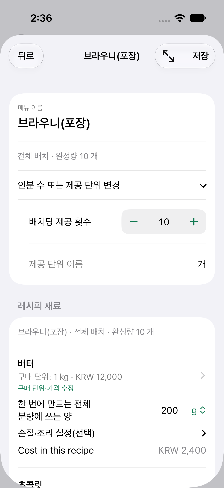
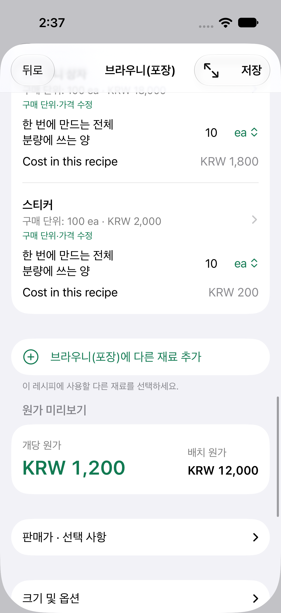
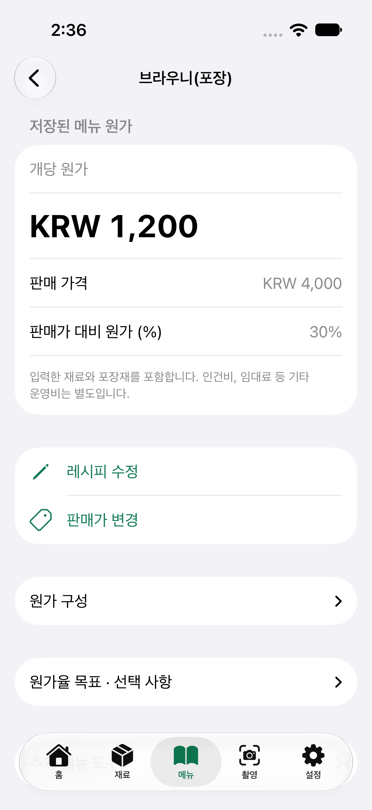

Café Cost Notes
Dessert Cost Ratios and Pricing: A Brownie Batch Example
A dessert’s cost ratio is its ingredient and packaging cost per piece divided by its selling price. Once you have chosen a target cost ratio, you can divide the cost by that ratio to calculate a selling price. Let’s work through a brownie example.
This costing example was written by the developer of Kitchen Margin. All prices, quantities, and the target cost ratio are illustrative assumptions, not actual café records or recommended prices.
| What is being calculated | Result |
|---|---|
| Ingredients for one tray | ₩9,600 |
| Packaging for 10 pieces | ₩2,400 |
| Full batch / 10 sellable pieces | ₩12,000 / ₩1,200 each |
| Cost ratio at a ₩4,000 price | 30% |
Purchase and recipe inputs for this example
All purchase prices are illustrative and include VAT. Packaging prices cover the full bulk quantity shown; ea means each. Replace these assumptions with your actual purchases.
| Ingredient / packaging | Full purchase quantity / price | Amount for the whole batch | Batch cost |
|---|---|---|---|
| Butter | 1 kg · ₩12,000 | 200 g | ₩2,400 |
| Chocolate | 1 kg · ₩16,000 | 300 g | ₩4,800 |
| Flour | 1 kg · ₩2,500 | 200 g | ₩500 |
| Sugar | 1 kg · ₩2,000 | 200 g | ₩400 |
| Eggs | 30 ea · ₩9,000 | 4 ea | ₩1,200 |
| Cocoa | 100 g · ₩1,000 | 30 g | ₩300 |
| Paper tray | 100 ea · ₩4,000 | 10 ea | ₩400 |
| Box | 100 ea · ₩18,000 | 10 ea | ₩1,800 |
| Sticker | 100 ea · ₩2,000 | 10 ea | ₩200 |
The batch makes 10 sellable pieces. Both ingredients and packaging use whole-batch quantities.
1. Add the ingredients for one tray
Butter: 200 g for ₩2,400, based on ₩12,000 per 1 kg. Chocolate: 300 g for ₩4,800, based on ₩16,000 per 1 kg. Add 200 g of flour at ₩500, 200 g of sugar at ₩400, 4 eggs at ₩1,200, and 30 g of cocoa at ₩300. The tray’s ingredient cost is ₩9,600. Include any decorations or sauces. Keep the full package purchase price separate from the cost of the amount actually used.
2. Divide by the number you can sell
If you cut the tray into 12 pieces but cannot sell 2 because they were used for samples or damaged, you have 10 sellable pieces. Ingredient cost is 9,600 ÷ 10 = ₩960 per piece. This already accounts for the lost portions, so do not add the same loss percentage again. Use records from several batches to adjust the sellable quantity.
3. Add packaging
A paper tray at ₩40, box at ₩180, and sticker at ₩20 total ₩240 per piece. Cost per brownie is 960 + 240 = ₩1,200. If dine-in and takeaway use different packaging, calculate them separately.
4. Work backward from a target cost ratio
With an illustrative target cost ratio of 30%, the calculated selling price is 1,200 ÷ 0.30 = ₩4,000. A 30% target will not suit every café. Consider preparation time, operating costs, and the alternatives customers compare when choosing a price. Recalculate the cost ratio when purchase prices change. If you sell slices from a whole cake, also check the amount you cannot sell, including offcuts that do not hold their shape.
Purchase prices and the selling price in this example all include VAT. The remaining 70% at a 30% cost ratio is not net profit. Labor, rent, electricity, payment processing fees, and other costs still have to be covered.
Follow along in the app
Set the currency to KRW and register each ingredient and packaging item with its purchase quantity and total price. In Items, create “Brownie (Takeaway),” set “Servings per batch” to 10, and enter the full tray’s quantities, including 200 g of butter and 300 g of chocolate. Enter 10 paper trays, 10 boxes, and 10 stickers so the packaging cost is divided correctly per piece. Check a batch cost of ₩12,000 and a per-piece cost of ₩1,200. Then enter a selling price of ₩4,000 and check the 30% cost ratio. You can find detailed steps in the Kitchen Margin English user guide.
Follow the example on screen
Genuine Korean-language screens from the released 1.2 app on an iPhone simulator. The inputs are illustrative; these are not café records.






The iPhone app Kitchen Margin automatically calculates cost per serving from the batch quantities and packaging you enter.